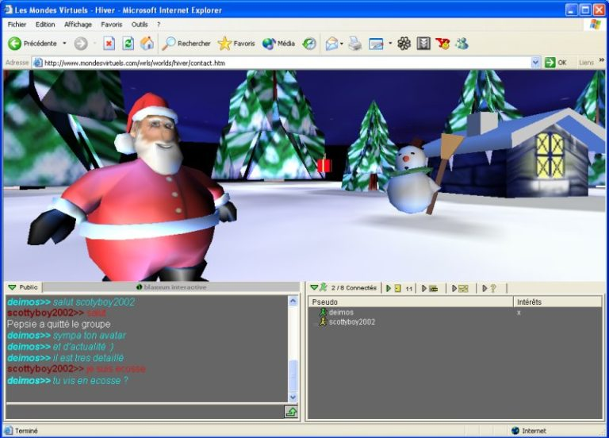

Les mondes ici présents ont été crées entre 1997 et 1999 via un outil appelé Internet Space Builder 2.1 et Cosmo Worlds 2.0. Ces mondes étaient au format VRML, un langage de description d’univers virtuels en 3 dimensions. Les mondes virtuels étaient aussi accessibles depuis la communauté virtuelle du 2eme Monde ( Genèse ) de Canal+, via un chat en 3D. Les utilisateurs pouvaient évoluer, discuter et interagir dans des univers 3D en utilisant des avatars, via un plugin nommé Blaxxun Contact.

Aujourd’hui, le support de Blaxxun Contact n’est plus assuré. Il est cependant possible d’explorer des mondes virtuels sans plugin directement depuis le navigateur grâce au WebGL. Que ce soit sur ordinateur, tablette, mobile et même console. Parmi les nombreux frameworks existants le choix s’est porté sur BabylonJS.
Babylon.js est un framework javascript ouvert et gratuit, plutôt facile à prendre en main et possédant une communauté active et bienveillante. Il dispose de nombreux outils comme un bac a sable et une zone de jeux pour tester rapidement des idées/concepts. La documentation est fournie et c’est vraiment intéressant dans un monde de pouvoir jouer avec les paramètres via un inspecteur directement depuis le navigateur ( si vous être curieux, appuyez sur la touche « L » dans un des mondes ).
Pour passer du format VRML au format Babylon.js, l’outil Blender m’a été d’une grande aide. Je proposerai prochainement un article détaillant cette migration.
Enfin, concernant l’aspect graphique, j’ai essayé de garder le plus possible l’aspect d’origine des différents mondes. Il y a deux exceptions, la forêt entourant la cité des arbres qui n’existait pas à l’époque et la pluie utilisant des particules dans le monde grand hall. Sinon tout est d’époque 🙂 Si vous souhaitez que j’aborde certains sujets à travers des articles/tutos, n’hésitez pas à m’envoyer un message.
Copyright © 2024 Josquin BERNARD ( deimos )